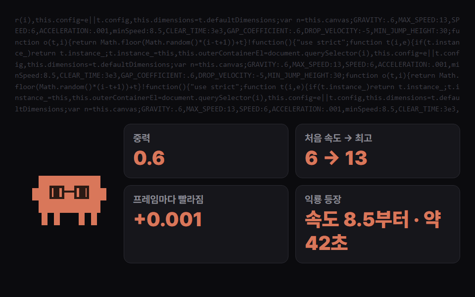

REA를 Claude Code에 붙이면, 소스 코드가 없는 앱 파일만 줘도 "이 기능이 어떻게 돌아가는지"를 숫자와 근거로 알아내고 내 프로젝트에 새로 만들어 줘요. 크롬 공룡 게임과 텔레그램 스포일러 효과로 직접 해 봤어요.
명령 프롬프트에 아래 '설치'를 넣으면 쓸 AI(Claude Code 등)를 고르라고 나와요. 고르고 승인하면 REA가 MCP로 연결되고 사용 설명(스킬)도 깔려요. 끝나면 Claude Code를 껐다 켜세요.
웹 게임·웹사이트는 배포된 파일을 폴더에 받아 두고, PC 앱은 설치 폴더를 그대로 쓰면 돼요. 그 폴더에서 claude를 실행하세요.
아래 '분석 요청'처럼 '어떤 기능을, 무슨 숫자까지' 알아낼지 구체적으로 적고, 새로 만들 파일 이름을 정해 주세요. 큰 앱은 10~30분 걸려요.

만들어진 html을 더블클릭해 원본과 나란히 띄워 보세요. 클로드가 근거를 .md 파일로 정리해 줘요.
명령 프롬프트에 한 줄
npx rea-agents@latest setup
폴더 이름·기능만 바꿔서
dino 폴더는 크롬 공룡 게임을 압축한 배포 파일이야. 소스 코드 없이 REA로 분석해서 숨은 규칙(중력, 점프 힘, 처음 속도와 빨라지는 정도, 최고 속도, 장애물 종류와 간격, 점수 계산)을 정확한 숫자로 찾아내고, 그 규칙대로 똑같이 움직이는 새 게임을 공룡게임.html 하나로 만들어 줘. 원본 그림은 쓰지 말고 도형으로 직접 그려. 찾은 숫자는 규칙.md로 정리해 줘
남의 코드는 복사하지 않게
이 폴더는 ○○ 웹의 배포 파일이야. ○○ 효과가 어떻게 만들어졌는지 REA로 찾아내고, 그 원리대로 내 페이지를 새로 만들어 줘. 원본 코드는 복사하지 말고 찾아낸 원리만 써서 직접 짜. 근거는 .md로 정리해 줘
도움이 되셨다면
@ai.antenna.kr
에서 바로 쓰는 AI 활용법을 계속 올립니다.